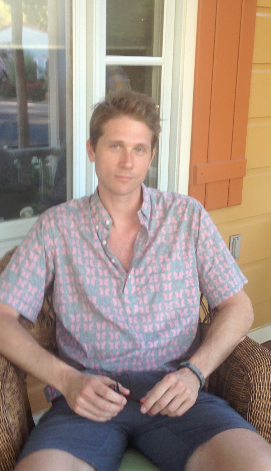

“I like to see a man proud of the place in which he lives. I like to see a man live so that his place will be proud of him.”
― Abraham Lincoln
Adriana
Mountain View, CA
City pride: quiet place, nice, clean, lots of parks, some diversity Contribution: Don't do much to contribute
 Drew
Drew
San Francisco, CA
City pride: his job Contribution: Need to think more...
 Krista
Krista
San Francisco, CA
City pride: Creative minds, freedom to express ideas, not being judged Contribution: Listening to people's ideas
 Rob
Rob
San José, CA
City pride: silicon Valley tech environment, farmland Contribution: don't cause trouble, pay taxes, a bit with the tech world
Nick
Portland, OR
City pride: place full of community Contribution: helping build the tech community
 Alex
New York, NY
City pride: a city that constantly vibrates Contribution: vibrate with the city, working hard, colaborate in local sports
 Tim
Tim
Mountain View, CA
City pride: heart of silicon Valley, brightest people Colaborate: being part of this workforce
 Jeremy
Jeremy
San Francisco, CA
City pride: openess and welcome to new ideas, different types of people Colaborate: being nice to people
Anthony
San Francisco
City pride: diversity, lay-back culture, startup movement Colaborate: look out for homeless people, less fortunate
 Garret
Garret
Northern California
City pride: clean water, small population, nature Colaborate: not stressing and telling people to have faith
 Christian
Christian
Oakland, Berkeley, CA
City pride: university in Berkeley Colaborate: bringing to Berkeley a new citize, a baby, that will pay taxes
Nazzim
Oakland, CA
City pride: parking on the street Colaborate: being good to people and recycling
Dana
Grass Valley, CA
City pride: culture, artists, music, performers Colaborate: being earth conscious, cleaning the lake
Chase
Oakland, CA
City pride: natural landscape Colaborate: coming back after living abroad, being part of local community
 Clara's Linkedin Profile
Clara's Linkedin Profile
 Clara's Resume
Clara's Resume